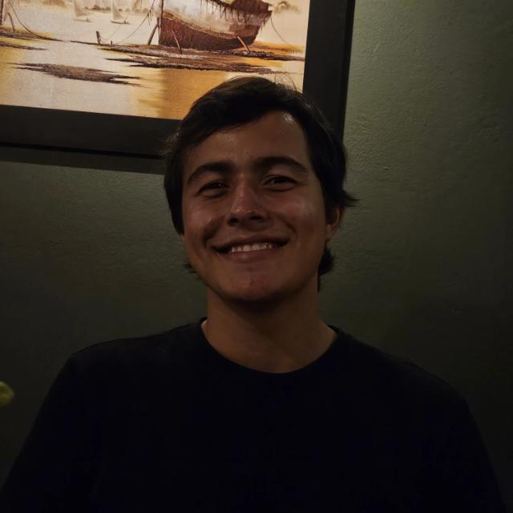

Santa Helena de Goiás, GO
Sou estudante do 6º período de Engenharia de Software na Universidade de Rio Verde. Tenho forte interesse em desenvolvimento back-end, arquitetura de sistemas e infraestrutura. Sou entusiasta do ecossistema Linux (desde customização de Kernel até conteinerização com Podman e Distrobox) e possuo experiência prática na criação de ferramentas CLI e APIs estruturadas.
Atendimento direto a clientes, organização de documentos e rotinas administrativas do escritório.
Ferramenta de linha de comando (CLI) desenvolvida em Go. Focada em indexação de arquivos, hashing e persistência JSON para sincronização de vaults (Obsidian) em rede local.
Atualmente no desenvolvimento de um homelab pessoal para testes focados em conteinerização e orquestração de serviços utilizando Docker, podman e NGIX para camada de segurança.